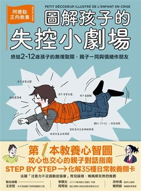

找出致病關鍵，徹底改善飲食與生活習慣
血膽固醇和三酸甘油酯偏高導致現代社會的富貴病，患有高血脂症的患者可能不會表現出明顯的症狀，同時除家族性高血脂症外，其他類型的高血脂症發展成冠心病、腦中風需要一定的時間，所以人們很容易忽視高血脂症的危害。
高血脂症最重要也是最直接的損害是加速全身動脈粥狀硬化，因為全身的重要器官都要依靠動脈供血、供氧，一旦動脈被粥狀斑塊堵塞，就會導致嚴重後果。而高脂蛋白血症是動脈粥狀硬化的主要原因。當人體內由於各種因素導致導致血脂多於機體的需要時，膽固醇等就會沉積在血管壁上，逐漸使血管硬化和狹窄。這是一個緩慢的過程，患者在很長一段時間內沒有任何症狀，但當堆積在血管壁上的脂肪達到一定量，量變引起質變，血管供應的相應器官就會因為缺血而產生病變。
本書特色
趕走壞的膽固醇、三酸甘油酯，暢通血管，掌握健康靠自己！
改善高血脂的飲食療法，遠離心血管疾病

小護士：LINE的一萬則不讀不回
Ten Thousand loves from nurse.
- 定價： 250元
- 優惠價： 79 折 198 元
- 優惠期限：2018年09月30日止
載入中...
作者介紹
作者簡介
HOWARD
．專業保健醫生
．著名醫學家，畢業於第二醫科大學醫療系。現為專職醫療保健醫生，被譽為「有突出貢獻的醫學家」。
HOWARD
．專業保健醫生
．著名醫學家，畢業於第二醫科大學醫療系。現為專職醫療保健醫生，被譽為「有突出貢獻的醫學家」。
譯者介紹
譯者簡介
HOWARD譯者
．專業保健醫生
．著名醫學家，畢業於第二醫科大學醫療系。現為專職醫療保健醫生，被譽為「有突出貢獻的醫學家」。
HOWARD譯者
．專業保健醫生
．著名醫學家，畢業於第二醫科大學醫療系。現為專職醫療保健醫生，被譽為「有突出貢獻的醫學家」。
詳細資料
- 作者姓名Author_zh (作者原名Author_ori)
- 譯者姓名Translator_zh (譯者原名Translator_ori)
- 出版社Book_publisher
- 書籍系列Book_series
- 出版日期Book_publish_date
- 頁數Book_pages
- 書籍版次Book_version
- 書本大小Book_size
- 裝訂方法Book_skin
- 書籍重量Book_weight
- Book_ISBN
- ISBN：9789865611767
- 叢書系列： 健康大講堂
- 規格：平裝 / 208頁 / 17 x 23 cm / 普通級 / 全彩印刷 / 初版
- 出版地：台灣